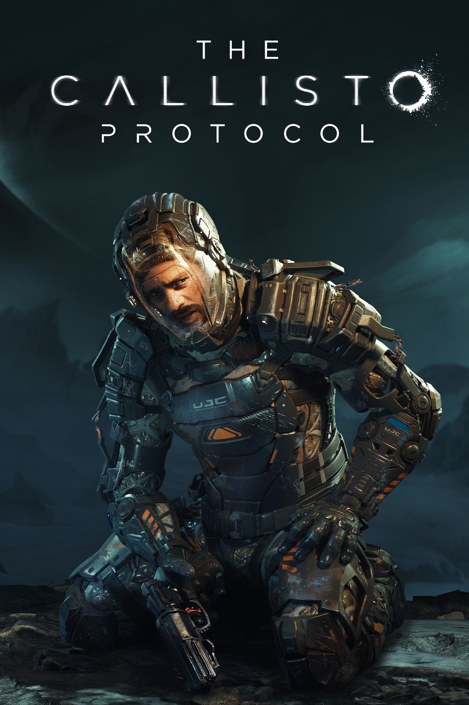
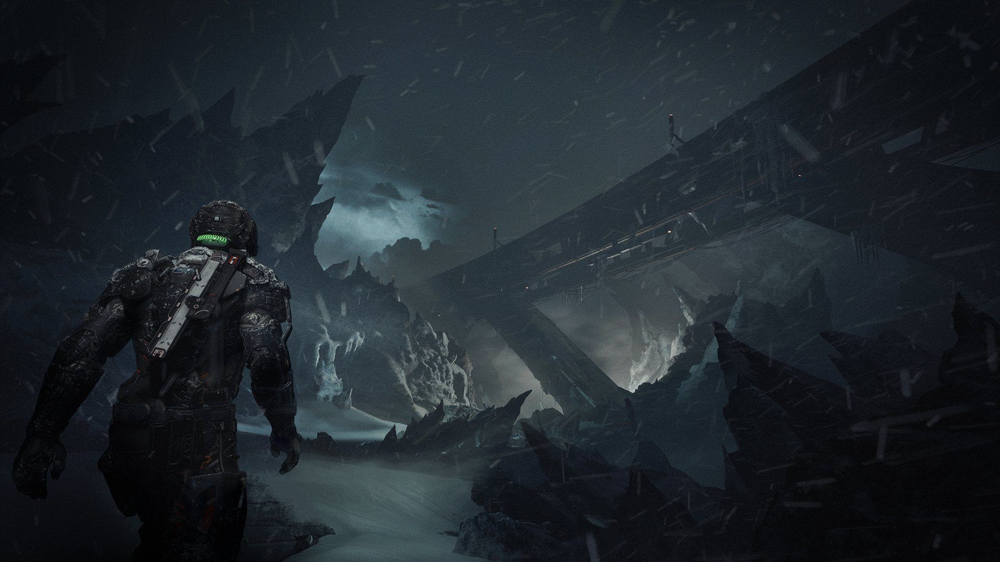

The Callisto Protocol
Протокол "Каллисто"
О игре
Год выхода: 2022
Страна: США
Разработчик: Striking Distance Studios
Жанр: приключения, ужасы, экшн, выживание
Мультиплеер: нет
Поддержка контроллера (ПК): полная
Облачные сохранения: Steam
Платформы: XBOX, PlayStation 5, PC
100 000 оценок

The Callisto Protocol - это приключенческий триллер, созданием которого занимаются авторы серий Dead Space и Call of Duty. События этого научно-фантастического проекта разворачиваются на планете Каллисто - одном из спутников Юпитера, где человечество сталкивается с некой инопланетной угрозой. Протагонисту игры предстоит выжить в ряде столкновений с неизвестным, постаравшись выбраться со спутника живым.
Скриншоты


Системные требования
Минимальные
- Операционная система: Windows 10 / 11
- Процессор: Intel Core i5-8400 / AMD Ryzen 5 2600
- Видеокарта: NVIDIA GeForce GTX 1060 / AMD Radeon RX 580
- Оперативная память: 8 ГБ
- HDD: 75 ГБ
- Версия DirectX: 11
- Переферийные устройства: клавиатура, мышь
Рекомендованные
- Операционная система: Windows 10 / 11
- Процессор: Intel Core i7-8700 / AMD Ryzen 5 3600
- Видеокарта: NVIDIA GeForce GTX 1070 / AMD Radeon RX 5700
- Оперативная память: 16 ГБ
- HDD: 75 ГБ
- Версия DirectX: 12
- Переферийные устройства: клавиатура, мышь
Интересные факты
- На этапе анонса создатели The Callisto Protocol утверждали, что действие игры происходит в одной вселенной с королевской битвой PUBG. Однако позже от идеи отказались — в мае 2022-го разработчики объявили, что вселенная у The Callisto Protocol всё-таки своя, отдельная, а с PUBG её объединяют лишь всевозможные пасхалки и отсылки.
- Один из ключевых создателей The Callisto Protocol — Глен Скофилд (Glen Schofield), автор Dead Space. По словам разработчика, концепция TCP родилась в 2019 году, когда он гулял по пустыне на курорте. Первым названием игры было Meteor Down. Сначала Скофилда смутило то, что его новая игра похожа на Dead Space, но переживать по этому поводу он не стал — дескать, своровать идею у самого себя не грех.
- Чтобы правдоподобно изобразить в игре всевозможные раны и увечья, разработчики изучали реальные снимки искалеченных или умерших людей — например, фото застрелившегося человека. По словам Глена Скофилда, на душевном благополучии сотрудников это не отразилось — к шокирующим кадрам со временем привыкли. Полученные знания использовали для создания технологии, отвечающей за реалистичное расчленение и повреждение тел.